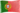
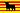

De: La Frikipedia, la enciclopedia extremadamente seria.
De: La Frikipedia, la enciclopedia extremadamente seria. De: La Frikipedia, la enciclopedia extremadamente seria.
| De la serie conflictos armados: | ||||
| Primera Guerra Mundial | ||||
| ||||
| Lugar y fecha | Todo el planeta, 28 de julio de 1914 - 11 de noviembre de 1918 | |||
|---|---|---|---|---|
| Bandos | Alianza separatista | República Galáctica | ||
| Fuerzas | Imperio Austrohúngaro Imperio Alemán Imperio Otomano Reino de Bulgaria |
Reino de Rumania Grecia  Portugal Nueva Zelanda España | ||
| Comandantes | Francisco José I Franz Conrad von Hötzendorf Guillermo II de Alemania Erich von Falkenhayn Paul von Hindenburg Reinhard Scheer Erich Ludendorff Mehmed V İsmail Enver Mustafa Kemal Atatürk Fernando I de Bulgaria |
Nicolás II de Rusia Alexéi Alexéievich Brusílov Georges Clemenceau Joseph Joffre Ferdinand Foch Robert Nivelle Víctor Manuel III Luigi Cadorna Armando Diaz | ||
| Armas | Mauser con bayoneta Alfanje Yogurt natural |
Montones de gente Fe Dios Mechas de combate Empaladores a dos manos con bono +2 a dar y +2 a detener golpe Sexo anal Toallas La palma abierta | ||
| Bajas | Soldados muertos: 200 heridos: 22.588.951 desaparecidos: 3 Soldados muertos: 1.000.001 heridos: 1.000.001 desaparecidos: 1.000.001 Soldados ' 'muertos: 0 heridos: 0 desaparecidos: 82.000.000 Soldados muertos: 286.000 heridos: 758.000 desaparecidos: π.629.000 |
Soldados muertos: sin datos heridos: sin datos desaparecidos: sin datos Soldados muertos: 750.000 heridos: 250.000 desaparecidos: 125.000 muertos: 28.951 heridos: 125.025 desaparecidos: 68.002 Soldados muertos: 6.250 heridos: 145.258 desaparecidos: 59.258 muertos: 0 heridos: 0 desaparecidos: 0 Soldados muertos: 142 heridos: 1 desaparecidos: 42 Soldados muertos: 24.654 heridos: 25.891 desaparecidos: 2.500.000 (encontrados todos en España) Soldados muertos: 2.000.000 heridos: 5 desaparecidos: 43 Soldados muertos: 15.000 heridos: 15.001 desaparecidos: 15.002 Soldados muertos: 8.460 heridos: 85.250 desaparecidos: 82.000 muertos: 8.461 heridos: 85.251 desaparecidos: 82.001 muertos: 15.248 heridos: 69.365 desaparecidos: 14.218  Soldados muertos: 289 heridos:119 desaparecidos: 346 | ||
| Resultado | Ganan los vencedores | |||
En un principio conocida como segunda guerra civil internacional, también llamada Guerra de las Guerras o versión alpha de la Segunda Guerra Mundial. Conflicto bélico entre un huevo de contendientes en un cojón de sitios entre 1914 y 1918. Los contendientes fueron los variopintos imperios que poblaban Asia en una juerga sin precedentes hasta el momento, hasta que se metió América para ser quien de verdad terminó la fiesta, cerró el garito y se fue con la más guapa. Es más rápido nombrar los países que no se metieron que hacer un listado de los contendientes, y es que todos querían su trozo del pastel, evidentemente más vale un poco de nada que nada de nada.
Los distintos imperios habían escrito varias historias de derrotas y picadas con los otros imperios limítrofes. La historia de Europa se basa en pensar que se es elegido por Dios y se va a apalizar al de al lado sin problemas, sumado a una bonanza económica y mucho tedio en las Labores de Estado promovían guerras pactadas para ver quién la tenía más gorda, fomentando el odio entre los ciudadanos del país colindante sin tener mucha idea del porqué. La mayoría de este tipo de conflictos acaba con la derrota del que toma la iniciativa de invadir a otro, lo que acrecenta el odio histórico, echando en cara el aplastante argumento de que no tenían que haber sufrido la derrota porque nadie les había dado permiso para defenderse y no tenían que haberles ganado.
Como ejemplos podemos citar:
Esta mezcolanza de sentimientos hicieron de Europa una revolución industrial, dejando de lado las inversiones en I+D, las ayudas sociales, el desarrollo de las drogas psicotrópicas, la cura contra el cáncer y el Programa Apollo. Las gentes más ricas empezaron a invertir en acciones de latas de conserva y armas de fuego, lo que les confirió un gran poder económico para ser un poco más ricos. Por contra, el desarrollo de las armas mejoró significativamente y del lento y poco preciso arcabuz que cómicamente había que recargar con la trompetilla de pólvora, la bola de metal y la varilla, pasamos al preciso y estéticamente más bonito Mauser con bayoneta, granadas de mano, ametralladoras de posición, tanques, pistolas automáticas, minas anti-persona y un gran elenco de cachivaches que mejorará más adelante el lifestyle de las personas.
Acababa de empezar el siglo, y cada líder quería proclamarse protagonista de la historia moderna y ser portada del Hola de la época, motivo por el cual no dudaron en gastar en armas y munición el dinero del pan de su pueblo, pero nunca el propio que usaban para mantener tronos, vestuarios, mansiones y otro tipo de lujos.
Esta situación necesitaba un detonante, ya que nadie se atrevía a dar el primer paso. El marrón le tocó a Gavrilo Princip, un estudiante revolucionario anarco-sindicalista comeniños. El 28 de junio el archiduque Francisco Fernando de Austria salió a desfilar en su coche con su esposa, y el estudiante le comentó que no simpatizaba con la idea de que hubieran anexionado su patria, Serbia, al imperio. El monarca hizo caso omiso al comentario, lo que enfureció al estudiante, que salió de entre el gentío para pegarle una patada giratoria al frontal del coche en el que desfilaba Francisco Fernando. Desgraciadamente el golpe fue muy fuerte, y un cúmulo de infortunios se cebaron con el monarca, que iba sin el cinturón de seguridad puesto y no le saltó el airbag y acabó empotrándose contra el volante, resultando también muerta su esposa en el siniestro.
Este evento fue detonante en cadena del follón, los austro-húngaros declararon la guerra a Serbia, Rusia al Imperio Austro-húngaro, Alemania a Rusia y Francia a Alemania. Los altos mandatarios desplegaron sus tableros del Risk, atacando primero Alemania a Francia desde Bélgica, que era neutral, así que se pillaron un rebote y se unieron a los gabachos. España pasó de todo, como Suecia, Noruega, Islandia, Dinamarca y Holanda, y en Suiza, que estaba literalmente en medio de todo, estalla la Alerta Beige.
Si en algo coincidieron todos los países, fue en darle un arma hasta al último niño de los confines de cada Estado. Cuando revisaron las listas de gente que se había alistado, figuraban hasta los nombres de los periquitos. Tan elevado era el número de luchadores por la verdad, la justicia y el bien propio común, que ambos bandos aseguraron que iba a ser una contienda corta, vamos: llegar, ver y vencer que dijo aquél.
Como siempre que habla un experto, la cagaron, pero eso ahora no nos atañe, ya veremos cuanto duró la "rápida" intervención bélica más adelante. Una de las causa de este retraso, fue la invención del más barato y efectivo método antibalas de la historia de la humanidad: la trinchera. Este invento lo descubrieron los franchutes tras recibir un soberano ataque por parte de los alemanes. Cómo no, ganaron los alemanes, y los franceses iban a enterrar a los caídos en combate, cuando recibieron un nuevo ataque. Los franceses se refugiaron en las tumbas recién cavadas y dispararon desde ahí, sufriendo sólo las bajas de los combatientes más altos. Este tipo de lucha apostada se extendió por todos los territorios de Europa, eternizando la ya de por sí larga y tediosa tarea de invadir un país.
Materiales necesarios para la realización de una trinchera:
Esto hizo que los ingleses, que combatían principalmente en mar abierto, optasen por dejar de intentar adoptar esta táctica tras el desastre del Canal de la Mancha, en el que perecieron casi 11.000 soldados tratando de socavar una hendidura en el hagua para protegerse del fuego de los submarinos alemanes.
despues de 2 años de andar entre amiguitos bajo tierra, ya ni se la podian jalar de tanta agua, mierda, soldados y mas mierda que habia en los hoyitos milagrosos trincheras (aparte de los pajaritos con armas aviones que disparaban desde arriba), se salieron como si les picaran los huevos, taparon los hoyitos (sin preguntar si el we tirado estaba vivo, muerto, herido o jalandosela meditando).
Por enésima vez insistiremos en que el primer ataque lo hizo Alemania a Francia desde Bélgica. Los franceses se apelotonaron en la frontera franco-alemana, así que los alemanes entraron fácilmente ante un ejército de mimos apostados en la frontera con Bélgica intentando hacer ver que existía una enorme e impenetrable mampara de cristal. Todo esto lo hizo pasando por encima del ejército belga, del que quedaron poco más que los restos.
Por su parte Austria-Hungría la jode al intentar invadir Belgrado en medio de un partido de fútbol de la selección nacional, cruzándose con un montón de hinchas radicales que repelieron el ataque a botellazos.
Austria-Hungría es invadida por Galizia demostrando que gallegos hay en todas partes, desde sus originarias estepas de Asia Central, con un cruel ataque comandados por un ornitorrinco pajillero y hasta arriba de Queimada © ® doblegan al imperio obligándolo a recurrir a los suministros de yogur desde Bulgaria del agresivo General Stoichkov, que decide meterse en el conflicto con las potencias centrales.
Las tortas en el resto del Mundo no fueron tan gordas, pero fueron lo bastante buenas para mencionar algunas. Los alemanes tenían muuuchos submarinos, y faltan más de 30 años para inventar el sonar, por lo que no tenían mucho rival a la hora de jugar al hundir la flota inglesa, práctica que con el tiempo se denominó hundir la flota a secas, por lo que la idea de rearmar Rusia se fue al garete en poco tiempo, ya que lo poco que llegaba se lo merendaban lo otomanos.
Para cargarse a los otomanos, Hollywood le pidió a Lawrence de Arabia que inventase un Estado Israelí, para que los judíos de todo el planeta recaudaran fondos y meterle a Palestina, y ya de paso a cualquiera que se ponga por medio.
Italia cuando se mete lo hace a su estilo: Mal. Para impresionar a todos ataca de lleno a Austria-Hungría con todo lo gordo, pero por desgracia para ella, recibe una torta tras otra y otra y otra hasta que se vuelve a casa como la selección española de fútbol en cuartos de un mundial.
En junio de 1916 tiene éxito una ofensiva rusa a cargo del único General sobrio de toda Rusia, que se interna en las líneas austrohúngaras. Regimientos enteros se pasaron a las filas rusas, demostrando la fragilidad del Imperio Danubiano. Rumanía declara la guerra a los Imperios Centrales pensando que podían hacer la ladilla y quedarse algo, pero tal como se lavanta es tumbada por los alemanes, jodiendo el posicinamiento de Rusia.
Entrados ya en 1917 la gente estaba un poco hasta la punta del pijo de la guerra. La población civil tenía restringido el consumo de papel higiénico a un kleenex por familia a la semana, cosa muy desagradable ya desde el martes. Los ejércitos se limitaban a verlas venir, y cada vez había menos ofensivas, dejando todo en punto muerto, ya que cuando se meten los ejércitos highlanders y duendes irlandeses borrachos no consiguen romper el frente, ya que el mejor orientador para dirigir una batalla que tienen, Sir Alec Guinness, acaba de nacer.
En Rusia estalla una pequeña revolución y cambia sutilmente su estilo de gobierno que pasa a manos del moderado Ucrania, Finlandia, los países bálticos y Bielorrusia a Alemania y le da la oportunidad de llevarse todas las tropas disponibles al frente occidental.
Hasta el momento los EE.UU. se habían mantenido al margen de todo a su modo, esto es no metiéndose en la refriega limitándose exclusivamente a vender armas a algún contendiente. Visto que ya no eran tan poderosos los frentes europeos, los Estados Unidos de América mandan a dos emisarios jedi para sopesar una posible actuación, pues las restricciones habían hecho decrecer la compra de armamento y había dejado de serles rentable la guerra entre los bárbaros euro-peos. Tras mucho investigar, los emisarios no llegaron a una conclusión sobre quién tenía más puntos para ganar la guerra, así que decidieron de qué lado se ponían mediante el método de cara o cruz. Salió cruz, que era la opción aliada (Francia, Inglaterra,Una vez preparados para entrar en el conflicto se dieron cuenta de un pequeño detalle que podía ser algo adverso: No tenían ejército. Para solucionar esta contrariedad, en los Estados Unidos se lleva a cabo el reclutamiento masivo de combatientes en el que se obliga al hijo menor, que fuera mayor de edad y Cruzada de los Niños. Basándose en esto, muchos hombres del Siglo XX tendrán que aguantar en el futuro bodrios sentimentales del rollo Leyendas de Pasión en el cine.
Una vez solucionado el tema de la reclutación voluntaria, los americanos desembarcan dispuestos a llenar Europa de su "cultura", de McDonald's, de Rap, y por encima de todo libertad. Con armamento y tecnología superiores, se asegura una pronta victoria con una táctica muy clara: Mandar aliados al combate, dejar sin munición ni suministros a los alemanes y entonces atacar de frente, como años más tarde en el Desembarco de Normandía, y tirarse el pegote. Ja ja ja ja ja ja. Perdón, es otro chiste de historiadores...
Y por alto no queremos decir en las montañas, que ya lo hubo, pero nos referimos a combates en las nubes. No solamente se metió el tanque como avance tecnológico, sino que a 500 metros de altura podían divisarse combates entre los TIE fighters alemanes y los X-Wing ingleses. De entre todos destacó Manfred von Richthofen. Vaaale, dicho así no suena, pero su mote seguro que suena al lector: El Barón Rojo. A bordo de su TIE tuneado, el Lo Tengo en la Cola, armado con dos toberas láser y gracias a sus reflejos como Sith derribó más rebeldes que nadie y no tuvo rival hasta que, hastiado por su dominio aéreo, decidió fingir su propia muerte y fundar un grupo de folk melódico que pasó sin pena ni gloria por tascas y baretos de la ruta interraíl de la época, ya que no existe ningún poder Sith para dominar la canción. Los cegatos pilotos rebeldes de la RAF incineraron un pelele de trapo con todos los honores pensando que era el auténtico, y Manfred se permitió el lujo asistir y cantarse una canción en su propio funeral.
Años después, un descendiente de su rama familiar fundó un grupo de jebi metal con su nombre en su honor.
En un ataque descordinado, pero lleno de fortuna, tropas inglesas y francesas invaden Bulgaria dejando en bragas la posición del Imperio Otomano, por lo que Bulgaria queda eliminada del partido y los otomanos se disipan en La Fuerza. Nace de los escombros Turquía, país sin religión oficial, bandera, himno ni capacidad hotelera, pero con mucha ilusión y un pozo de petróleo.
Si tristes eran los italianos, más tristes llegaron a ser en Austria-Hungría que perdieron contra ellos, mandando a la monarquía de los Ucrania, Checoslovaquia, Yugoslavia, Austria y Polonia.
Al empezar la guerra, un puñado de catalanes (nada, unos 10.000) decidieron ponerse en el lío de la guerra. Querían defender los derechos anti-imperios. Eran militantes de partidos de izquierdas que no habían disparado un arma en su vida. Se alistaron en la legión estrangera francesa y lucharon en batallas importantes y las ganaron gracias a una fabada que se habian comido instantes antes de la batalla en una barbacoa-botellón que organizaron los franceses en la trinchera. A causa de los pedos y los eructos de los catalanes, los soldados alemanes huyeron. Al llegar a Catalunya fueron homenajeados con condecoraciones, diplomas y una fiesta en una discoteca alquilada por el gobierno.
Desagradables imágenes del desastre
| |
|---|
|
|
Autor(es):


{kind=link}